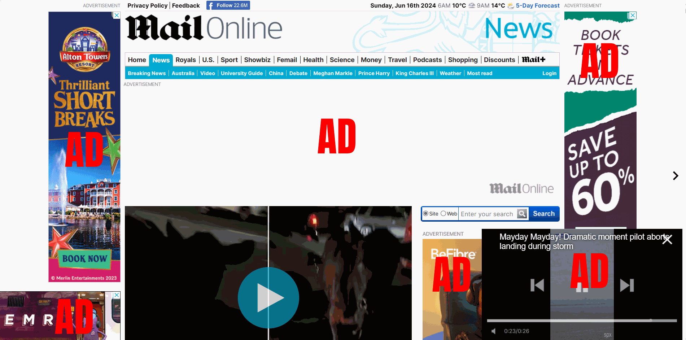
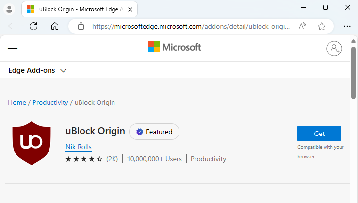
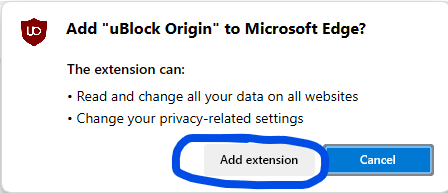
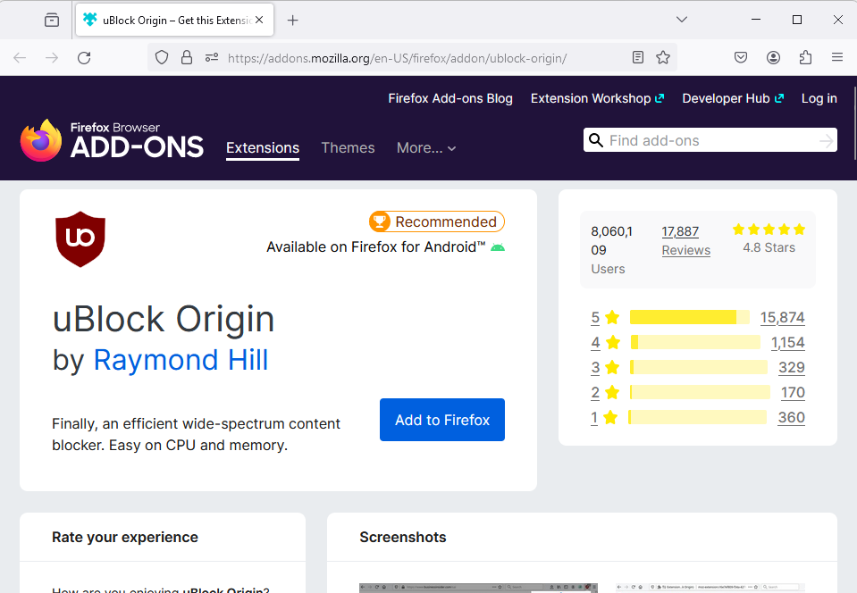
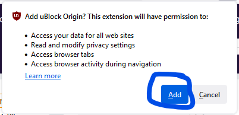
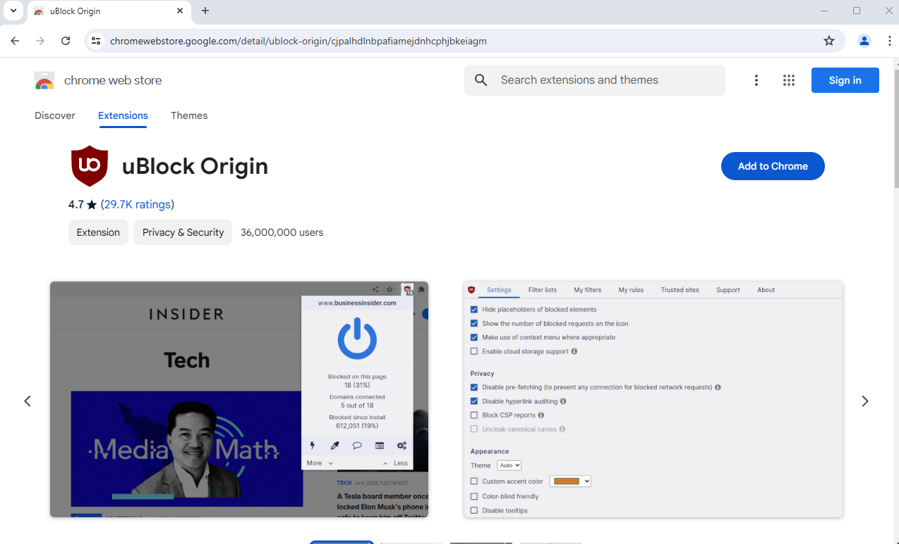
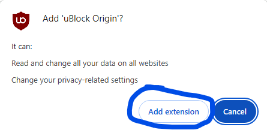
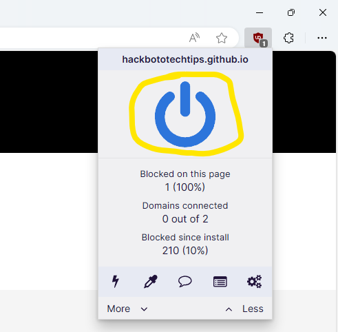

Blocking advertisements on your PC
Ads are annoying, they also put you at risk from scams and malware.
Introduction
Advertisements are commonplace on the internet as they are a really quick and easy way to make a few quick quid here and there for the website owners/ operators, however in recent years advertisements have become more common place as website owners/ operators are becoming greedier and wanting a larger income from their sites at your expense.
You can block these annoying advertisements on your PCs web browser for free using an adblocker.
There are many misconceptions surrounding adblockers such as stealing content; however, these are not true as you hold the full right to refuse any content you do not want to see or download on your computer, you can also whitelist websites if you still want to show ads on a particular website.
Ads put you at a greater risk of malware and scams, therefore it is best that you block them as a general rule for all websites, and only allow ads on those websites who are not overly greedy and put you at risk.
uBlock Origin content blocker
uBlock Origin is by far the best adblocker for your PC, it is an extension that you install on your web browser, this means that all of the websites you visit on your PC will have ads blocked by default once you install the extension.
The uBlock Origin content blocker is fully free to use, it is also open-source and the lead developer actually refuses donations for the project. You can learn more about uBlock Origin by visiting the official website.
uBlock Origin official websiteHow to install uBlock Origin
It is really easy to install uBlock Origin on your PCs web browser you just need to follow the guide below for your particular web browser.
Installing uBlock Origin on Microsoft Edge
To install uBlock Origin on Microsoft Edge you need to visit the uBlock Origin page in the Edge Add-ons and click on the "Get" button.
Edge Add-ons: uBlock Origin
Click on the "Add extension" button to install uBlock Origin, once you have done this you should see a message telling you that uBlock Origin has been successfully installed.
Installing uBlock Origin on Mozilla Firefox
To install uBlock Origin on Mozilla Firefox you need to visit the uBlock Origin page in the Firefox Browser ADD-ONS and click on the "Add to Firefox" button.
Firefox Browser ADD-ONS: uBlock Origin
Click on the "Add extension" button to install uBlock Origin, once you have done this you should see a message telling you that uBlock Origin has been successfully installed.
Installing uBlock Origin on Google Chrome
To install uBlock Origin on Google Chrome you need to visit the uBlock Origin page in the chrome web store and click on the "Add to Chrome" button.
chrome web store: uBlock Origin
Click on the "Add extension" button to install uBlock Origin, once you have done this you should see a message telling you that uBlock Origin has been added to Chrome.
Installing uBlock Origin on other Web Browsers
If you are using a web browser that has not been mentioned you should follow the Google Chrome guide as most popular web browsers are based on Google Chrome meaning that the extension should be compatible, if you are using Safari, you are out of luck as uBlock Origin is not supported on any version of the Safari web browser.
How do I allow ads on a specific site?
If you want to allow ads on a particular website for any reason, you just need to click on the uBlock Origin extension, you then need to click on the giant power button, this will whitelist the entire website, to view the ads simply refresh the page.
If you want to block the ads after whitelisting the website you just need to navigate to that website again and click the power button, it will then turn blue and the ads will be blocked again.
Page Updated: 16/06/2024
Page Author: Hackboto